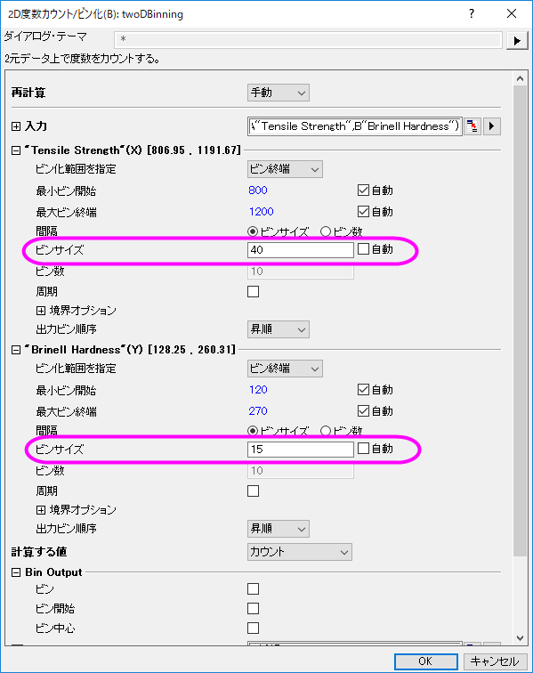
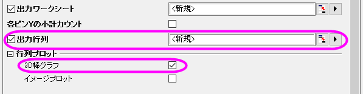
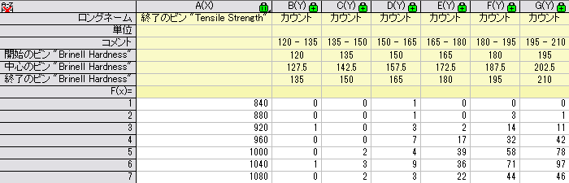
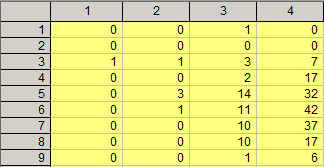
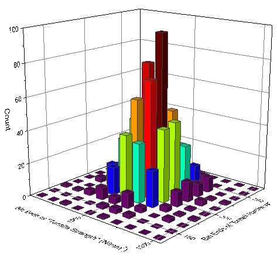
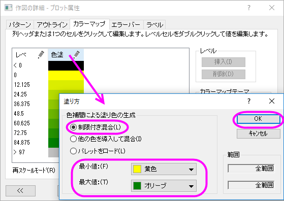
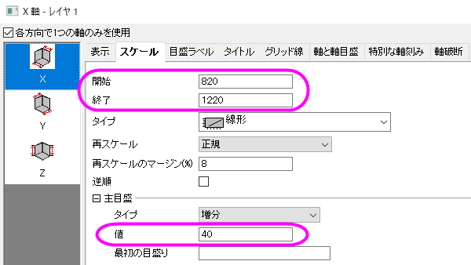

2Dビン化
2D-Binning
サマリー
2D度数カウント/ビン化の操作はデータの出現頻度を2つの変数について数えます。このデータから3D棒グラフあるいはイメージプロットを作図でき、データの分布について視覚的に特徴を捉えることができます。

必要なOriginのバージョン: Origin 2015 SR0以降
学習する項目
- 2つの変数を使用してデータの頻度を数える方法
- 2Dビン化データを3Dヒストグラムとして作図する
ステップ
このチュートリアルは、チュートリアルデータプロジェクト（<Origin EXE フォルダ>\Samples\TutorialData.opj）と関連しています。
- Tutorial Data.opjを開き、2D Frequency Count (Binning)フォルダにあるブック3D Histogram.datをアクティブにします。
- 列Aと列Bを選択し、メニューから統計：記述統計：２D度数カウント/ビン化と操作してTwoDBinningダイアログを開きます。
- ダイアログ内で次の設定を行います。
- ビンサイズの自動チェックを外し、Xのビンサイズ値を40に設定します。

- ダイアログの最後にある出力行列にチェックをつけ、表示される行列プロットでは3D棒グラフを選択します。

- OK ボタンをクリックすると、次の出力が表示されます。



詳細な編集
- 3Dヒストグラムをダブルクリックして作図の詳細ダイアログを開きます。カラーマップタブを開き、色塗りヘッダをクリックして塗り方ダイアログを開き、以下の図のように設定します。

OKをクリックして塗り方ダイアログを閉じ、もう一度OKをクリックして作図の詳細ダイアログを閉じます。
- 軸をダブルクリックして軸ダイアログを開きます。スケールタブを指定してXYZ軸をそれぞれ以下の図のように設定します。
- X アイコンを選択してX 軸のスケールを開始820、終了1220、主目盛の値を40に設定します。

- Yアイコンを選択してY 軸のスケールを開始127.5、終了277.5、主目盛の値を15に設定します。
- Z アイコンを選択してZ 軸のスケールを開始0、終了100、主目盛の値を20に設定します。
- タイトルタブを開き、X軸、Y軸、Z 軸のタイトルをそれぞれ「Tensile Strength」、「Brinell Hardness 」、「Number of Tests」に設定します。 OKをクリックしてこの設定を適用して、ダイアログを閉じます。